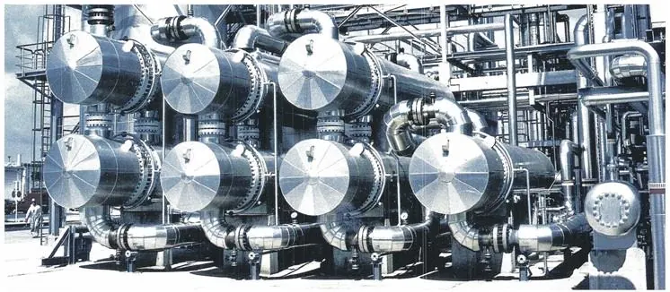

Izolații specializate
Termoizolații industriale pentru conducte, rezervoare și turbine la temperaturi de peste 500°C — de la cochilii din fibre minerale și sticlă celulară până la spumă poliuretanică aplicată in situ.
- Conducte, rezervoare, armături, instalații-cisternă
- Sisteme de încălzire însoțitoare pe conducte
- Izolații fonice și protecție contra incendiilor
- Protecție anticorozivă și izolații la fațade